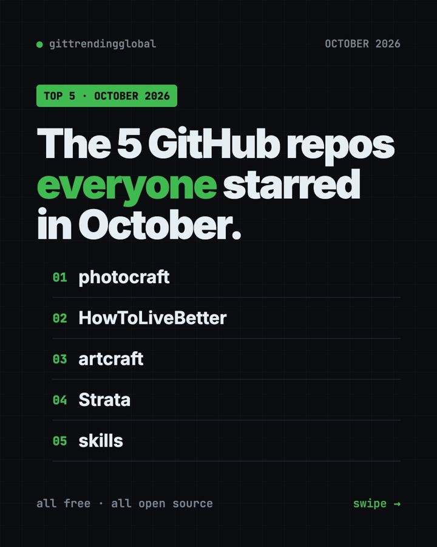
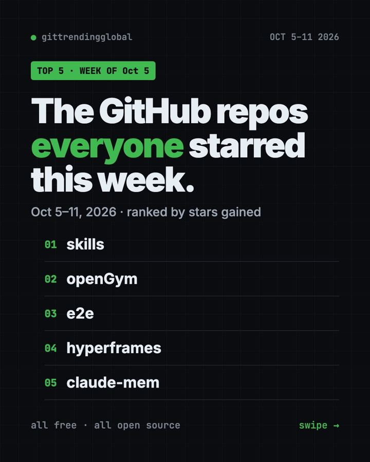
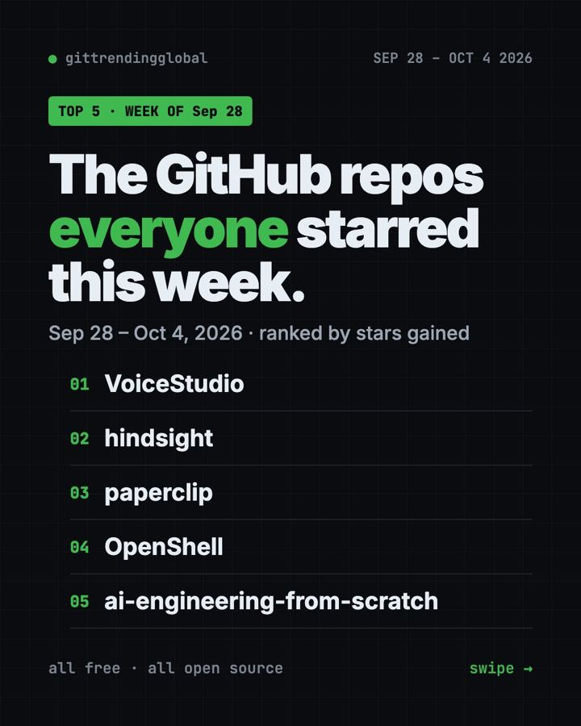

Home › Top repos › GitHub trending this week
Popular GitHub Repos, Week of February 9, 2026
- Top repos
- Published 2026-10-15
- 6 min read
- Updated 2026-10-16
- By the It's Trending Global team
Popular GitHub repos week of February 9, 2026: Google's LangExtract, Pi, Dexter, claude-mem and Monty, explained in plain English with setup.
Google's LangExtract topped the popular GitHub repos week of February 9, 2026, with about 8,100 new stars. Right behind it came Pi, Dexter, claude-mem and Monty.
This week leaned practical. One tool pulls facts out of messy text, one researches companies, and one gives AI a safe place to run code. Here is each one, plus how to try it.
Key takeaways
- LangExtract from Google turns long text into neat lists of facts, and shows where each fact came from.
- Pi, the bendable coding agent, gained stars for a second week.
- Dexter is an AI agent for company and stock research. Its own README says it is not for real trading.
- claude-mem kept climbing as more people wanted AI helpers with memory.
- Monty is a tiny, locked-down Python runner for code that AI writes.
Popular GitHub repos week of February 9, 2026 at a glance
| Rank | Repo | Stars gained | Job it does | Needs |
|---|---|---|---|---|
| 1 | LangExtract | +8.1K | Pulls facts from text | Python, an AI key or local model |
| 2 | Pi | +4.1K | Minimal AI coding agent | Node.js (installer adds it) |
| 3 | Dexter | +4.0K | Financial research agent | Bun, OpenAI and data API keys |
| 4 | claude-mem | +3.7K | Memory for AI helpers | Node.js |
| 5 | Monty | +3.4K | Safe sandbox for AI-written Python | Python, JavaScript or Rust |
Gains cover February 9 to 15, 2026. Totals were checked on GitHub on October 16, 2026.
1. LangExtract: pull the facts out of any text
Stars: +8.1K this week · about 39K total today
What it is: LangExtract is a free Python library from Google. You show it one example of what you want, like "medicine name and dose." Then it finds every match in a long document. Each result is linked to the exact spot in the text. It can also make an interactive web page so you can check the results.
Who it's for: Researchers, analysts and curious people with piles of notes or reports.
One everyday use: List every character and their feelings in a novel chapter. The live demo does exactly that with Romeo and Juliet.
Install it: Copy and paste this:
pip install langextract
It works with Google's Gemini models (you need an API key) or free local models through Ollama.
Install LangExtract and pull every date, place and person out of notes.txt, then make the review web page.
2. Pi: still climbing
Stars: +4.1K this week · about 115K total today
What it is: Pi is a slim AI coding agent you run in your terminal. It works with many AI providers. You can add features with small extensions, or ask Pi to write them for you.
Who it's for: People who want a light coding agent without a pile of features.
One everyday use: Ask Pi to write a little script that renames your downloads by date.
Install it: On Windows, paste this:
powershell -c "irm https://pi.dev/install.ps1 | iex"
On Mac or Linux, use curl -fsSL https://pi.dev/install.sh | sh.
Install Pi from https://github.com/earendil-works/pi and have it write a script that sorts my Downloads folder by date.
3. Dexter: an AI research assistant for companies
Stars: +4.0K this week · about 28K total today
What it is: Dexter takes a money question and breaks it into research steps. It pulls live financial data, like income statements and balance sheets. Then it checks its own work before answering. Its README sums it up: "Think Claude Code, but built specifically for financial research."
Who it's for: Students and hobby investors who want to learn how companies report their numbers.
One everyday use: "Compare the revenue growth of two companies over the last three years."
Install it: You need Bun (a JavaScript runtime), an OpenAI API key and a Financial Datasets API key. Then copy and paste this:
git clone https://github.com/virattt/dexter.git
cd dexter
bun install
cp env.example .env
Add your keys to the .env file, then run bun start.
Set up Dexter from https://github.com/virattt/dexter, help me add my API keys safely, and start it.
⚠️ Heads up: Dexter's README says it is for learning only, not real trading. Its answers can be wrong or out of date. It is not financial advice, and neither is this post.
4. claude-mem: memory that carries over
Stars: +3.7K this week · about 101K total today
What it is: claude-mem watches what your AI helper does, saves a compressed summary, and feeds the useful bits into later sessions. So tomorrow's chat knows what today's chat did.
Who it's for: Claude Code users first, though it supports many other helpers.
One everyday use: Pick up a half-finished project after a week away without re-explaining it.
Install it: Inside Claude Code, add the marketplace and the plugin:
/plugin marketplace add thedotmack/claude-mem
/plugin install claude-mem
Install claude-mem as a Claude Code plugin and show me what it remembers about this project.
5. Monty: a safe little box for AI-written code
Stars: +3.4K this week · about 8.7K total today
What it is: When an AI writes code, you may not want it touching your files. Monty, from the team behind Pydantic, runs that Python code in a sealed box. Inside, there is no file system, no network and no settings to snoop on. The README says a new box starts in under a millisecond.
Who it's for: Developers building AI apps that run code.
One everyday use: Let a chatbot do math for your users without giving it access to your server.
Install it: In a Python project, copy and paste this:
uv add pydantic-monty
JavaScript users can run npm install @pydantic/monty instead.
Add pydantic-monty to this project and run the README's chocolate bar example to show me how the sandbox works.
Which one should you try first?
- You have lots of text to sort: try LangExtract. The live demo needs no install.
- You want a light coding agent: try Pi.
- You are learning about stocks: explore Dexter, just for learning.
- Your AI helper forgets everything: add claude-mem.
- You build AI apps: look at Monty.
FAQ
What were the popular GitHub repos the week of February 9, 2026?
LangExtract, Pi, Dexter, claude-mem and Monty gained the most stars from February 9 to 15, 2026.
Is LangExtract an official Google product?
It is published under Google's GitHub account and licensed Apache-2.0. Using Gemini models needs your own API key.
Can Dexter tell me which stocks to buy?
No. Its README says it is not for real trading and not financial advice. Treat it as a research and learning tool.
Why would I need a sandbox like Monty?
AI-written code can make mistakes. A sandbox keeps those mistakes away from your files and network.
See the best GitHub repos of February 2026 and February 2026 in AI. The week before is February 2, and the week after is February 16.
Want a new free tool explained every day? Follow @itstrendingglobal on Instagram.
Keep reading

Trending GitHub Repos October 2026: The Top 5 So Far
The trending GitHub repos of October 2026 so far: a free Photoshop-style editor, an AI art studio, a big AI model for gaming PCs and more, explained.

Trending GitHub Repos This Week, Oct 5 2026: The Top 5
Trending GitHub repos this week Oct 5 2026: Matt Pocock's skills, the openGym workout tracker, e2e testing, HyperFrames video and claude-mem memory.

GitHub Trending September 28, 2026: Hindsight and Paperclip
GitHub trending September 28 2026: Hindsight, Paperclip, NVIDIA's OpenShell and a free 542-lesson AI course, with setup steps for each.